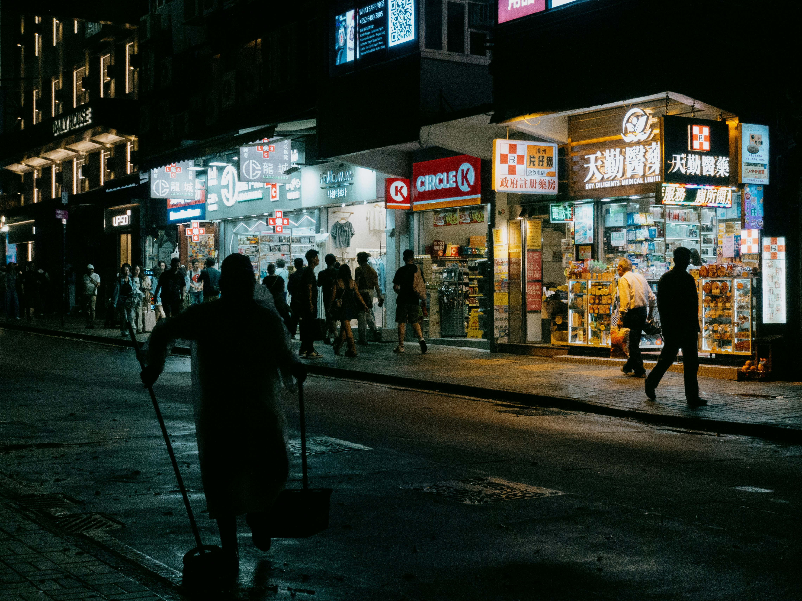

Neon Streets
CC0 License - Free for commercial use (Photo by Clay Banks)

Wet Reflections
CC0 License - Free for commercial use (Photo by James Wheeler)

Light Trails
CC0 License - Free for commercial use (Photo by Max Bender)